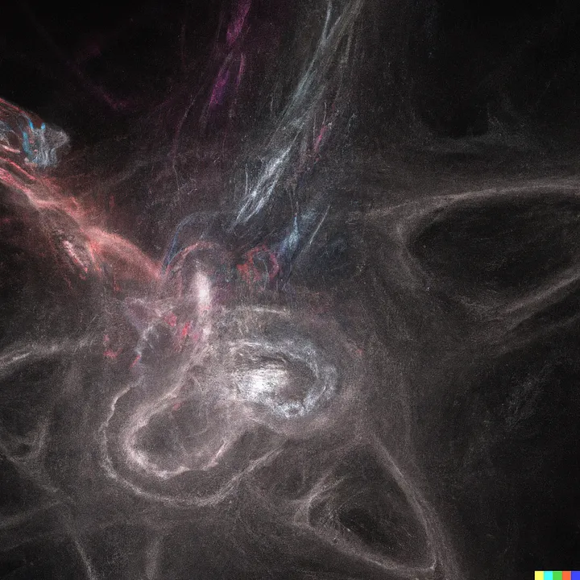
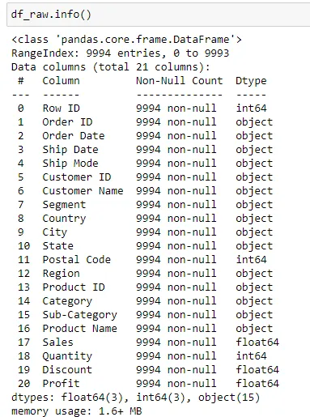
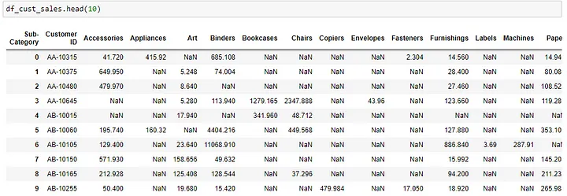
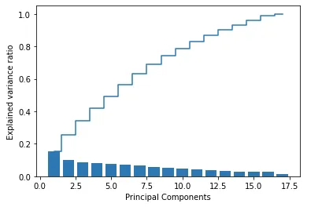
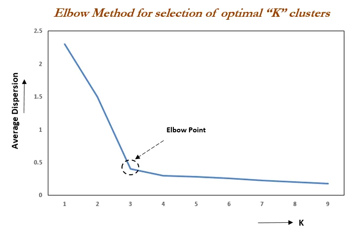
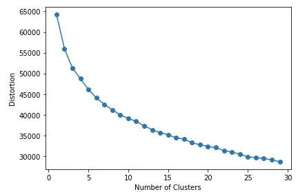
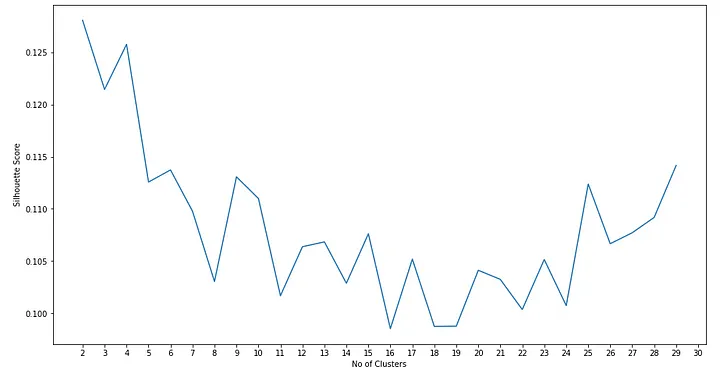
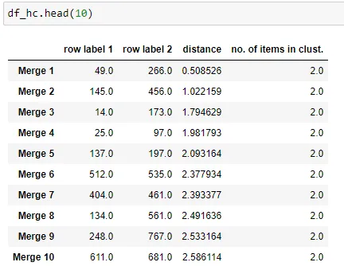
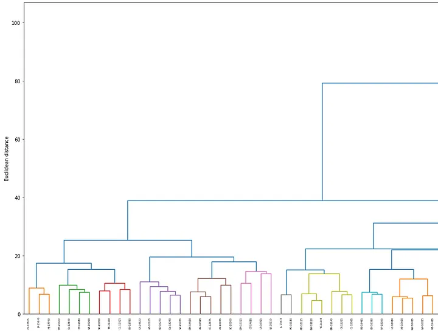
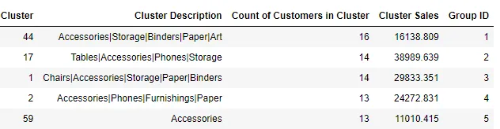

Hierarchical Clustering can be more suitable compared to KMeans when grouping customers based on purchase behaviors and detecting outliers

Introduction
Clustering can be a particularly useful starting point to embark on a Machine Learning journey especially when data labels are yet to be built up. One of the easy way to start is to employ clustering based on the purchase behaviors of customers or departments. This can be done with with any datasets which contains sales data based on product categories. Based on the clustering results, customers can be grouped into meaningful clusters for further analysis. In addition, outliers can be detected for clusters with few customers within.
KMeans and Hierarchical Clustering are two of the most common and popular techniques used today. In this article, I would like to examine in more details on the end to end process from data preprocessing to post processing of clustering results and highlight some of the differences and usefulness of the two techniques based on my experiences deploying them on projects.
Links to code and data
- The sample dataset used for illustration can be downloaded from Kaggle https://www.kaggle.com/datasets/vivek468/superstore-dataset-final
- The full codes in notebook and the dataset can be found from the following GitHub link: https://github.com/ZS-Weng/Machine_Learning/tree/main/Clustering
Standard Data Preprocessing
The dataset contains 9994 rows and 21 columns. The overview of the dataset is as shown below:

To perform the initial clustering analysis, we will only be making use of the Customer, Sub-Category and Sales Categories. We will first transform the data by performing a pandas pivot_table operation so that we can get the amount spent by each customers on the sub categories.
df_key_fields = df_raw[["Customer ID", "Sub-Category", "Sales"]].copy()
df_cust_sales = df_key_fields.pivot_table(
values="Sales", columns="Sub-Category", aggfunc=np.sum, index="Customer ID"
).reset_index()After the pivot_table operation, a sample of the output is as shown below:

There are many instances where there might be some customers who spend and unproportionate larger amount compared to most of the other customers, causing the results to skew. To prevent that, we will normally apply a log transformation to the sales amount to stabilize the variance of the variable and make the relationship between the variable and the target variable more linear.
df_cust_sales.iloc[:, 1:] = df_cust_sales.iloc[:, 1:].applymap(lambda x: np.log(x + 1))
PCA (Principal Component Analysis) preprocessing before KMeans Clustering
It is usually best practice to perform PCA (Principal Component Analysis) before KMeans clustering as PCA could help to reduce dimensions and noise and remove correlated features to help the algorithm.
For PCA, the number of components will need to be defined and we usually would choose the number of components based on a a percentage of explained variance e.g. 90%.
For visualization, we can run pca based on the range of n_components and we can visualize how the amount of variability in the dataset is increasingly covered with larger n_components set.
pca = PCA()
df_pca = pca.fit_transform(df_for_pca)
exp_var = np.cumsum(pca.explained_variance_ratio_)
plt.bar(range(1, df_pca.shape[1] + 1), pca.explained_variance_ratio_, align="center")
plt.step(
range(1, df_pca.shape[1] + 1), np.cumsum(pca.explained_variance_ratio_), where="mid"
)
plt.ylabel("Explained variance ratio")
plt.xlabel("Principal Components")
plt.show()
To directly get the number of components based on the ratio threshold, we can apply a mask to mask values smaller than the threshold and find the location of the smallest value using argmin.
exp_var = np.ma.MaskedArray(exp_var, exp_var < 0.9)
n_components = np.argmin(exp_var)KMeans Clustering
The first method to explore would be KMeans clustering where the number of clusters need to be predetermined. The common way to find the optimal number of clusters would be to iterate through multiple clusters and find the optimal number of clusters where the distortion decreases the least with an increase in K.

In many of the real life datasets, the plot of distortion against number of clusters, K might not be so visually straightforward. Below is a sample code to generate the plot and the results based on the superstore dataset.
distortions = []
for i in range(1, 30):
km = KMeans(n_clusters=i, init="k-means++", max_iter=300, random_state=0)
km.fit(pca_arr)
distortions.append(km.inertia_)
print(len(distortions))
plt.plot(range(1, len(distortions) + 1), distortions, marker="o")
plt.xlabel("Number of Clusters")
plt.ylabel("Distortion")
plt.tight_layout()
plt.show()From the graph, we can see that there is not a very straightforward point seen as the elbow point.

Another way to find the optimal number of clusters, k for KMeans is calculating the average silhouette score for different number of k which can be achieved based on the code below.
More details on sihouette score and plots can be found from the scikit learn code example page: https://scikit-learn.org/stable/auto_examples/cluster/plot_kmeans_silhouette_analysis.html
from sklearn.metrics import silhouette_score
list_i = []
list_score = []
for i in range(2, n_clusters):
# Initialize the clusterer with n_clusters value and a random generator
# seed of 10 for reproducibility.
km = KMeans(n_clusters=i, init="k-means++", max_iter=500, random_state=0)
cluster_labels = km.fit_predict(pca_arr)
# The silhouette_score gives the average value for all the samples.
# This gives a perspective into the density and separation of the formed
# clusters
silhouette_avg = silhouette_score(pca_arr, cluster_labels)
list_i.append(i)
list_score.append(silhouette_avg)From the graph, generated we can see the the optimal number of clusters with the highest score will be 2 and 4. In many cases, such small number of clusters might not provide useful and meaningful grouping and larger cluster values might also not be so straightforward to be selected.

Hierarchical Clustering
There are instances where we found Hierarchical clustering to be more effective. Below are some of the hierarchical clustering packages in Scikit Learn.
from scipy.cluster.hierarchy import linkage
from scipy.cluster.hierarchy import dendrogram
from sklearn.cluster import AgglomerativeClusteringHierarchical clustering is akin more to a bottom up approach where records are clustered together based on the distance away from each other. Eventually, all customers will be merged into a single cluster. We can see the details of how the cluster forms with each merge by using linkage.
row_clusters = linkage(df_for_pca.values, method="ward", metric="euclidean")
df_hc = pd.DataFrame(
row_clusters,
columns=["row label 1", "row label 2", "distance", "no. of items in clust."],
index=[f"Merge {(i + 1)}" for i in range(row_clusters.shape[0])],
)
From there we can determine the number of merges e.g. 85% on the data and find the corresponding distance metrics which we can use to apply clustering. From experience, a lower distance threshold can be better used to find outliers while a higer threshold can help to achieve larger clusters for analysis or further actions.
# Finding the merge based on 85% of merges
merge_threshold = 0.85
row = int(merge_threshold * df_hc.shape[0])
distance_threshold = df_hc.iloc[row, 2]
print(row, distance_threshold)From the distance threshold obtained, we can visualize how customers are grouped together using dendrogram.
labels = df_cust_sales.iloc[:, 0].values
plt.figure(figsize=(300, 12))
row_dendr = dendrogram(row_clusters, labels=labels, color_threshold=distance_threshold)
plt.ylabel("Euclidean distance")
plt.xlabel("Customer ID")
plt.show()In the dendrogram generated below, different colors represent different clusters and the x-axis labels are the customer ids from the dataset.

Once the result looks satisfactory, the clusters can be generated using AgglomerativeClustering.
# Use Agglomerative Clustering based on Threshold
from sklearn.cluster import AgglomerativeClustering
ac = AgglomerativeClustering(
n_clusters=None,
distance_threshold=distance_threshold,
affinity="euclidean",
linkage="ward",
)
hc_cluster = ac.fit_predict(df_for_pca.values)Data Post Processing and Application of Clustering Information
When the cluster details are generated, the cluster number is usually random in nature and it might take a lot of effort to provide a meaningful description for each cluster. Some post processing of the data which are found to be helpful include extracting details based on the attributes of the clusters (sub category in this example), sort the clusters based on a metric like total sales or number of customers and assign a cluster/group number based on the rank to provide a more meaningful cluster/group number. The aggregation for a cluster can be easily achieved with groupby.
df_cluster_cat_count = (
df_cluster_original_amount.groupby(["Cluster", "Sub-Category"])
.agg({"Sales": "sum", "Customer ID": "nunique"})
.reset_index()
)
df_cluster_cat_count.columns = [
"Cluster",
"Sub-Category",
"Sales",
"Count of Customers in Cluster SubCat",
]
Conclusion
From my experience, clustering can be a very useful in many situations especially as an unsupervised learning ML method when there is a lack of data labels for supervised learning. For transactional data, one of the first steps which can be taken to apply clustering is to group customers by their purchasing behavior on product categories.
Hierarchical Clustering can be a useful and flexible method to cluster the customers to find both outliers and generate groups of customers for follow up actions. There can also be standardization based on the percentage of merge to form the clusters.
The cluster id assigned from clustering algorithms will change between each runs and does not provide useful information. Data Post Processing through aggregation of relevant metrics and description can be useful to add more useful information to describe the clusters.
Thank you for reading and hope the information was useful in some way!